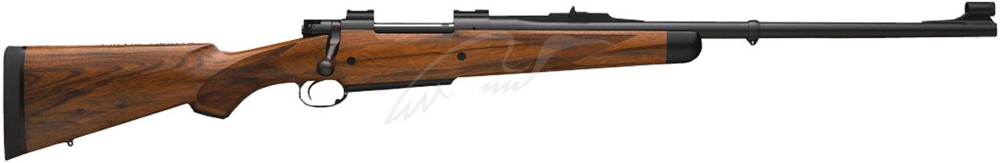

Карабин Dakota 76 African кал. 30-06
Код: 12500603
Цена: 12935.00 €

Описание
Model 76 — благодаря надежности, считается одной из лучших винтовок для африканских сафари и охоты на опасного зверя. В крупных калибрах часто используется профессиональными охотниками РН для подстраховки клиентов (вопреки сложившемуся заблуждению об обязательности двуствольного штуцера). Пользуется популярностью среди
охотников-трофейщиков.
Подробное описания товара
Свою бескомпромиссную безотказность унаследовал от легендарных Mauser M 98 и Winchester 70, улучшенной и модернизированной версией которых является. Конструкция основана на
продольно-скользящем поворотном затворе, запирающего ствол двумя массивными боевыми упорами. Ствольная коробка изготовлена из единого куска высококачественной стали, имеет плоское основание и выполнена заедино с лапой отдачи. Извлечение стреляной гильзы осуществляется мощным «маузеровским» экстрактором. Трехпозиционный предохранитель винчестеровского типа расположен в задней части затвора (в крайнем заднем положении — блокируется затвор и спусковой крючок; в среднем — затвор уже можно открыть, но спуск с бокового взвода блокирован; в переднем положении переключателя винтовка готова к выстрелу). Спусковой механизм «сухой» без предупреждения, как правило, имеет заводскую установку натяжения в 1400 г. Магазин постоянный коробчатый — при разрядке опустошается путем отжима специального рычага, имеющего выступ внутри спусковой скобы. Ствол оснащен регулируемым целиком и мушкой (надежно защищенной развитым намушником); на нем же располагается передняя антабка для погонного ремня. Предусмотрена возможность установки оптического прицела, с помощью фирменных
колец-креплений (приобретаются отдельно), для чего на ресивере установлены посадочные места. Ложа изготовлена из отборного ореха, имеет пистолетную рукоять, выступ для опоры щеки и защитное эбонитовое окончание цевья черного цвета. Приклад оканчивается резиновым затыльником, и может комплектоваться встроенным ртутным гасителем отдачи (делает стрельбу крупными калибрами более комфортной и позволяет в случае необходимости быстрее произвести повторный выстрел).
Серьезное оружие — для серьезных охот!
Характеристики
| Категория: |
Оружие и комплектующие |
| Подкатегория: |
Огнестрельное оружие |
| Подкатегория: |
Нарезное оружие |
| Подкатегория: |
С продольно-скользящим затвором |
| Гарантия: |
12 месяцев |
| Производитель: |
Dakota |
| Модель: |
76 African |
| Калибр: |
30-06 |
| Оружие нарезное: |
С продольно-скользящим затвором |
| Приклад (ложа): |
Орех. |
| Длина общая, см: |
120 см |
| Вес: |
Приблизительно 3,2 кг |
| Количество патронов: |
5+1 |
| Конструкция магазина: |
Постоянный коробчатый |
| Прицельные приспособления: |
Целик и мушка |
| Комплектация: |
Пластиковый кейс |
| Дополнительная информация: |
В приклад установлен ртутный компенсатор отдачи, эффективно снижающий импульс отдачи при стрельбе мощными патронами. |
| Длина ствола, см: |
61 |
| Страна производитель: |
США |
* Характеристики и комплектация товара могут изменяться производителем без уведомления
Все права защищены © 2017